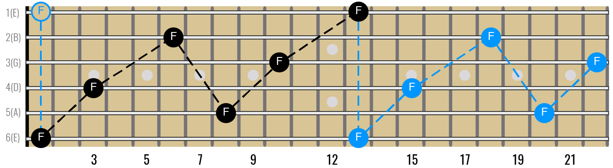

Overview
What is my main goal for this lesson?
To give a breif overveiw of the basic music theory that is actually applicable to intermediate guitar players across all genres.
• Other Concepts and links to my favorite Teachers
What will you get out of learning all this?
• Play rythym parts anywhere on the fretboard.
• Be able to understand and easily communicate with other musicians.
• Have multiple approaches to improvising/playing lead parts and know when to use them.
• Understand what other players are doing.
• Be able to understand and easily communicate with other musicians.
(My definition of music theory is the language musicians use to explain music to each other. It's not a group of laws you must follow its more general guidlines and the language nessesary to explain them.)
String Numbers
If you dont know the string names you are probably not an intermediate guitar player and should probably hit up Marty Shwarts's beginner series or something but there are a couple things I would like to clear up about string names and how we talk about the fretboard.
Explain string numbers and the proper way to talk about up and down
The Notes in Music.
There are 12 notes in western (not middle eastern) music.
A, A#, B, C,
C#, D,
D#, E, F,
F#, G,
G# (# stands for
sharp)
Notice there is no sharp between B and C and no sharp between E and F.
The notes that have #'s (sharps) in them can also be referred to as b's (flats) but we will get into that later, for now just think of them as #s.
Every fret on the fretboard makes the sound of one of these 12 notes. We name each location on the fretboard (each fret on each string) by the sound that it makes. For example every green circle in the photo below makes a G sound. Many are in different octives but they all make a G. Take a look at this diagram and notice how all 12 notes are there. After that grab your guitar and a tuner, play some notes and see if they coorespond to this diagram. (If your guitar is tuned than they will)


Each string makes the sound of its name when you play it without a finger on the fretboard. If you put a finger on a fret it makes that sound. For example if you put your finger on the third fret of the low E string and pick that string it will make the sound of a G note.
Standard tuning octive hack to not have to learn the whole fretboard. I should hide this section and make them press a button if they want the technique tips.
The most beautiful thing about the guitar is that it is very shape based. You can often learn one shape to do many things.
These two shapes actually create the same interval, an octive, we will get into what that is and how it works later but for now all you need to know is that if you play the shape from the top two photos from the 6-4th strings or from the 5-3rd strings both notes you are playing will be the same note, one will be an octive higher but they will be the same note.
The only difference between this shape and the next shape is that the second shape requires you to move your second finger one fret further.

Knowing these two shapes allows you to quickly find the name of any note on the fretboard simply by knowing the notes on the Low E string and the A string.
If you want know the notes on the Low E string you also know all of the notes on the high E string becasue they are both tuned to E. So whatever the note on the fifth fret of the low E string is (A) it will be the same on the fifth fret of the high E string.
So great I memorized two string worth of notes and now I know three strings worth of notes. Fun trick. What about the other three strings?
These octive shapes give us another easy trick.
If you want to know the name of a note on a string other than the E or A string you can use the octive shape to trace it back to the E or A string which you do know.
For examample: if you wanted know all the notes on the Low E string and you wanted to know what note is on the third fret of the D string you could simply put make the first octive shape with your second finger on the third fret of the D string and whatver note your first finger is on is the same note. So in this case your first finger is on the first fret of the Low E string which is an F so the third fret of the D string must be an F.

The Major Scale
A scale is a formula that helps us group notes together. The Major scale is the scale (group of notes) that all of western music is based on. Pretty much all music theory traces it's roots back to the major scale.
Learning the major scale will make it possible for you to easily figure out what key a song is in, know what chords are in a key, what notes are in a chord, what notes are in a scale as well as many other things.
Here is a diagram of one octive of the major scale on a guitar.
So I said a scale is a formula right? Well what is the formula for the Major scale?
The major scale is based on two different intervals (distances in music) half steps and whole steps, a half step is equal to one note. This means when you move over a half step you move over one fret (one note) and when you move over a whole step you move over two frets(two notes).
Photo showing this
The major scale Forumla is: W, W, H, W, W, W, H
Here is an example. Photo and examples written out showing all the notes and how major scales are derrived from them.
How to make major and minor chords.
How to make a major chord.
How to make a minor chord.
The caged system is just barre chords and its awesome
What are the chords in a key and how to find them.
Tell the rules.
Show the proof.
show how awesome this is
How does the pentatonic scale work and what is soloing by key.
Explanation
What is the pentatonis scale. Major vs Minor.
Why does the pentatonic scale work over all diatonic chords.
Major Pentatonic Shapes

Major Pentatonic Shapes Connected On The Fretboard

How To Connect Pentatonic Shapes

Arpeggios and playing the changes
How to "play the changes".
What are arpeggios.
how to use them with the pentatonic scale and the caged system.
7. Extended chords
A. What are they.
B. How are they useful for rythym playing and harmony
C. How are they useful for soloing.